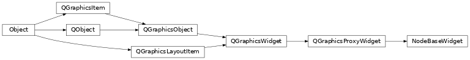
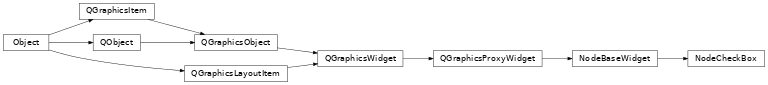
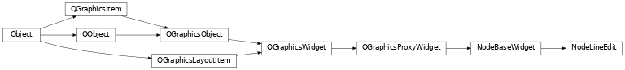

Node Widgets¶
NodeGraphQt.BaseNode and displayed in the node graph.Classes:
|
This is the main wrapper class that allows a |
Displays as a |
|
Displays as a |
|
Displays as a |
NodeBaseWidget¶
- class NodeGraphQt.NodeBaseWidget(parent=None, name=None, label='')¶
This is the main wrapper class that allows a
QtWidgets.QWidgetto be added in aNodeGraphQt.BaseNodeobject.- Parameters:
parent (NodeGraphQt.BaseNode.view) – parent node view.
name (str) – property name for the parent node.
label (str) – label text above the embedded widget.
Attributes:
value_changed(*args, **kwargs)Signal triggered when the
valueattribute has changed.Methods:
on_value_changed(*args, **kwargs)This is the slot function that Emits the widgets current
NodeBaseWidget.value()with theNodeBaseWidget.value_changedsignal.get_icon(name)Returns the default icon from the Qt framework.
get_name()Returns the parent node property name.
set_name(name)Set the property name for the parent node.
Returns the widgets current value.
set_value(text)Sets the widgets current value.
Returns the embedded QWidget used in the node.
set_custom_widget(widget)Set the custom QWidget used in the node.
Returns the label text displayed above the embedded node widget.
set_label([label])Sets the label text above the embedded widget.
- value_changed(*args, **kwargs)¶
Signal triggered when the
valueattribute has changed.(This is connected to the :meth: BaseNode.set_property function when the widget is added into the node.)
- Parameters:
str, object
- Emits:
property name, propety value
- on_value_changed(*args, **kwargs)¶
This is the slot function that Emits the widgets current
NodeBaseWidget.value()with theNodeBaseWidget.value_changedsignal.- Parameters:
args – not used.
kwargs – not used.
- Emits:
str, object: <node_property_name>, <node_property_value>
- get_icon(name)¶
Returns the default icon from the Qt framework.
- Returns:
icon name.
- Return type:
str
- get_name()¶
Returns the parent node property name.
- Returns:
property name.
- Return type:
str
- set_name(name)¶
Set the property name for the parent node.
Important
The property name must be set before the widget is added to the node.
- Parameters:
name (str) – property name.
- get_value()¶
Returns the widgets current value.
You must re-implement this property to if you’re using a custom widget.
- Returns:
current property value.
- Return type:
str
- set_value(text)¶
Sets the widgets current value.
You must re-implement this property to if you’re using a custom widget.
- Parameters:
text (str) – new text value.
- get_custom_widget()¶
Returns the embedded QWidget used in the node.
- Returns:
nested QWidget
- Return type:
QtWidgets.QWidget
- set_custom_widget(widget)¶
Set the custom QWidget used in the node.
- Parameters:
widget (QtWidgets.QWidget) – custom.
- get_label()¶
Returns the label text displayed above the embedded node widget.
- Returns:
label text.
- Return type:
str
- set_label(label='')¶
Sets the label text above the embedded widget.
- Parameters:
label (str) – new label ext.
NodeCheckBox¶
- class NodeGraphQt.widgets.node_widgets.NodeCheckBox(parent=None, name='', label='', text='', state=False)¶
Displays as a
QCheckBoxin a node.Note
To embed a
QCheckBoxin a node see func:NodeGraphQt.BaseNode.add_checkbox()Methods:
Returns the widget checked state.
set_value([state])Sets the widget checked state.
- get_value()¶
Returns the widget checked state.
- Returns:
checked state.
- Return type:
bool
- set_value(state=False)¶
Sets the widget checked state.
- Parameters:
state (bool) – check state.
NodeComboBox¶
- class NodeGraphQt.widgets.node_widgets.NodeComboBox(parent=None, name='', label='', items=None)¶
Displays as a
QComboBoxin a node.Note
To embed a
QComboBoxin a node see func:NodeGraphQt.BaseNode.add_combo_menu()Methods:
Returns the widget current text.
set_value([text])Sets the widgets current value.
add_item(item)add_items([items])sort_items([reversed])clear()- get_value()¶
Returns the widget current text.
- Returns:
current text.
- Return type:
str
- set_value(text='')¶
Sets the widgets current value.
You must re-implement this property to if you’re using a custom widget.
- Parameters:
text (str) – new text value.
- add_item(item)¶
- add_items(items=None)¶
- all_items()¶
- sort_items(reversed=False)¶
- clear()¶
NodeLineEdit¶
- class NodeGraphQt.widgets.node_widgets.NodeLineEdit(parent=None, name='', label='', text='')¶
Displays as a
QLineEditin a node.Note
To embed a
QLineEditin a node see func:NodeGraphQt.BaseNode.add_text_input()Methods:
Returns the widgets current text.
set_value([text])Sets the widgets current text.
- get_value()¶
Returns the widgets current text.
- Returns:
current text.
- Return type:
str
- set_value(text='')¶
Sets the widgets current text.
- Parameters:
text (str) – new text.